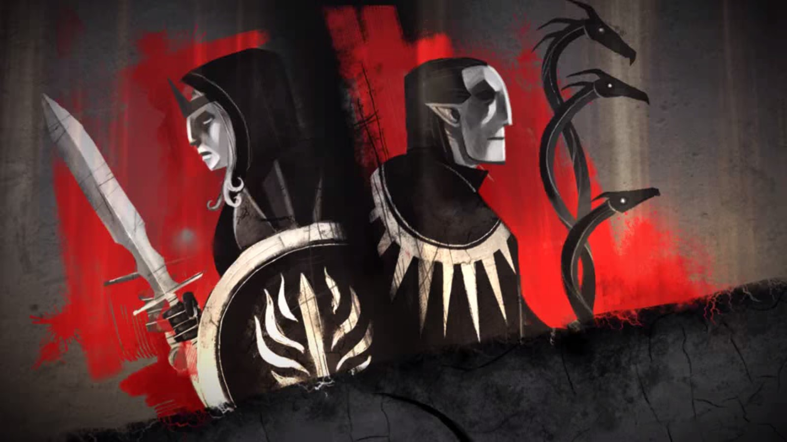

Anders
“The people fear what we can do, but to use that fear to bludgeon us into submission is wrong! And they do it with our blessing!”
Spanning over a decade, Dragon Age II traces Hawke's rise to power in the political chaos of Kirkwall. Hawke's family flees the destruction of Lothering during the Fifth Blight, traveling to the Free Marches and eventually influencing the fate of all Thedas. Hawke ultimately becomes the Champion of Kirkwall, embroiled in intrigues that will change the world forever.
Hawke's story is framed by the narration of Varric Tethras, who is being interrogated by Cassandra Pentaghast − a Seeker of the Chantry who wants the Champion's aid.
“The people fear what we can do, but to use that fear to bludgeon us into submission is wrong! And they do it with our blessing!”
“Protect what matters with everything you have, or you'll have nothing, and deserve it.”
“Other people always took the risks to keep me free.”
“It seems I am again in your debt... and shadow.”
“They know what I am. Let them come, if they find the courage.”
“Our mistakes make us who we are.”
“It's a Keeper's job to remember. Even the dangerous things.”

“Who better serves the Maker: a brother of the faith, or a prince who can sway a whole city?”
“There's power in stories, though. That's all history is: The best tales. The ones that last. Might as well be mine.”